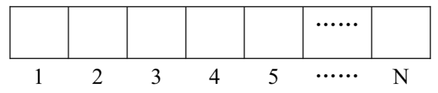

小明过生日的时候，爸爸送给他一副乌龟棋当作礼物。
乌龟棋的棋盘是一行 $N$ 个格子，每个格子上一个分数（非负整数）。棋盘第 $1$ 格是唯一的起点，第 $N$ 格是终点，游戏要求玩家控制一个乌龟棋子从起点出发走到终点。

乌龟棋中 $M$ 张爬行卡片，分成 $4$ 种不同的类型（$M$ 张卡片中不一定包含所有 $4$ 种类型的卡片见样例），每种类型的卡片上分别标有 $1、2、3、4$ 四个数字之一，表示使用这种卡片后，乌龟棋子将向前爬行相应的格子数。游戏中，玩家每次需要从所有的爬行卡片中选择一张之前没有使用过的爬行卡片，控制乌龟棋子前进相应的格子数，每张卡片只能使用一次。游戏中，乌龟棋子自动获得起点格子的分数，并且在后续的爬行中每到达一个格子，就得到该格子相应的分数。玩家最终游戏得分就是乌龟棋子从起点到终点过程中到过的所有格子的分数总和。
很明显，用不同的爬行卡片使用顺序会使得最终游戏的得分不同，小明想要找到一种卡片使用顺序使得最终游戏得分最多。
现在，告诉你棋盘上每个格子的分数和所有的爬行卡片，你能告诉小明，他最多能得到多少分吗？
第 $1$ 行 $2$ 个正整数 $N$ 和 $M$，分别表示棋盘格子数和爬行卡片数。
第 $2$ 行 $N$ 个非负整数，$a_1, a_2,……, a_N$，其中 $a_i$ 表示棋盘第 $i$ 个格子上的分数。
第 $3$ 行 $M$ 个整数，$b_1,b_2,……, b_M$，表示 $M$ 张爬行卡片上的数字。
输入数据保证到达终点时刚好用光 $M$ 张爬行卡片，即 $N-1=\sum_1^Mb_i$。
输出只有 $1$ 行，$1$ 个整数，表示小明最多能得到的分数。
9 5 6 10 14 2 8 8 18 5 17 1 3 1 2 1
73
13 8 4 96 10 64 55 13 94 53 5 24 89 8 30 1 1 1 1 1 2 4 1
455
【样例 1 解释】
小明使用爬行卡片顺序为 1，1，3，1，2，得到的分数为 6+10+14+8+18+17=73。注意，由于起点是 1，所以自动获得第 1 格的分数 6。
【数据范围】
对于30%的数据有 $1≤N≤30，1≤M≤12$。
对于50%的数据有 $1≤N≤120，1≤M≤50$，且 4 种爬行卡片，每种卡片的张数不会超过 20。
对于100%的数据有 $1≤N≤350，1≤M≤120$，且 4 种爬行卡片，每种卡片的张数不会超过40；$0≤a_i≤100，1≤i≤N；1≤b_i≤4，1≤i≤M$。输入数据保证 $N-1=\sum_1^Mb_i$。
 Comet OJ
Comet OJ